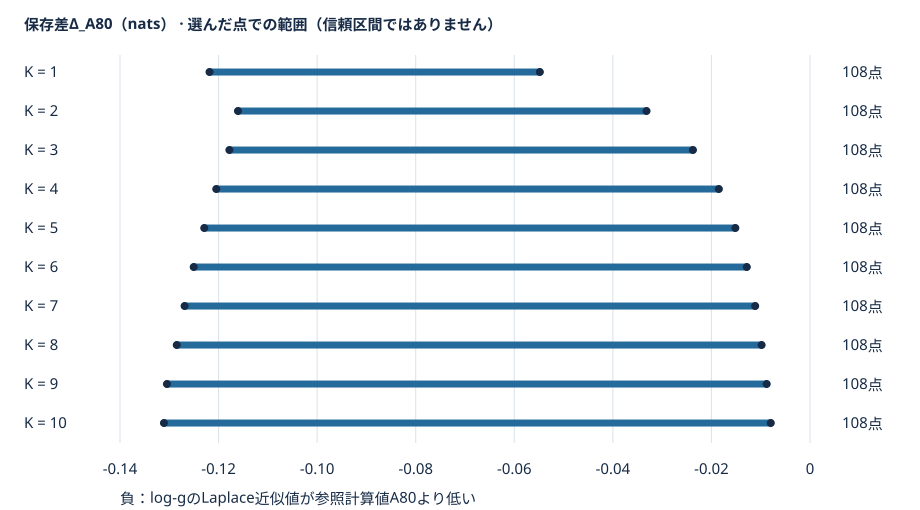

保存値レポート · 2026-10-20
既存F0 kernelの
log-g Laplace近似差
これは同じ既存priorに対するF0 kernel近似差の固定scalar診断です。音声品質・MOS・F0精度・VUV校正の評価でも、方式の採用判断でもありません。PR67 Draftと500組BMAの条件は変更していません。
これらは別の音声評価です。本診断のscalar範囲を、既存比較の品質順位へ読み替えません。新音声は生成していません。
何の差を見ているか
N = 400、δ = 3、K = 1…10。既存契約の値であり、新しいprior選択ではありません。無次元入力rの固定有限支持だけを扱います。
L80 = log BL の80桁評価、A80 ≈ log Bexact の80桁・非保証参照
BLは現行helperと同じlog-g Jacobian・mode・曲率を保つLaplace近似、Bexactは同じ既存priorの数学的積分対象です。したがってΔは log BL − log Bexact に対応する保存近似差で、単位はnatsです。「80桁」は演算精度の設定であり、80桁の正しさを保証しません。
負のΔは、Laplaceのlog BFがA80参照より低いことを表します。保存されたA80基準Δは、この1,080点すべてで負でした。Q基準の全点符号まで集計したとは主張しません。
K別の保存範囲
各Kの108点について、保存された最小値と最大値をそのまま表示します。全体の範囲は -0.131080 ～ -0.007957 nats でした。

| K | 点数 | 欠測 | 最小Δ | 最大Δ |
|---|---|---|---|---|
| 1 | 108 | 0 | -0.121836 | -0.054817 |
| 2 | 108 | 0 | -0.116062 | -0.033168 |
| 3 | 108 | 0 | -0.117803 | -0.023754 |
| 4 | 108 | 0 | -0.120464 | -0.018498 |
| 5 | 108 | 0 | -0.122902 | -0.015147 |
| 6 | 108 | 0 | -0.125045 | -0.012824 |
| 7 | 108 | 0 | -0.126890 | -0.011121 |
| 8 | 108 | 0 | -0.128483 | -0.009818 |
| 9 | 108 | 0 | -0.130468 | -0.008789 |
| 10 | 108 | 0 | -0.131080 | -0.007957 |
表示の丸めだけを行っています。元の数値文字列はK別表CSVと原summaryに保持。最大絶対差による順位・平均は追加していません。
この観測から言えないこと
- 有限1,080点で同符号でも、連続するr全領域の証明にはなりません。
- 50/80桁と2方式の運用上一致（1e−9 nats）は、certified errorや真値誤差上界ではありません。
- 支持は端点付近・中央格子・境界付近を意図的に配置したものです。支持区分には重複所属があり、自然なr分布を代表する平均誤差ではありません。
- F0誤り、H0確率、VUV校正、自然音声品質・MOSの改善やモデル採用へは読み替えません。
保存値を引き継いだ来歴
| 工程 | 保持・回収 | 外部実wait経過 |
|---|---|---|
| 原run | 548成功／1中断／531未試行 | 300.232秒・期限停止 |
| 回復shard1 | 178点 | 50.480秒・正常終了 |
| 回復shard2 | 177点 | 52.112秒・正常終了 |
| 回復shard3 | 177点 | 51.681秒・正常終了 |
| 保存値union | 548 + 532 = 1,080点 | 2.813秒・正常終了 |
旧548成功は再計算・新gate適用せず不変再利用。index548の旧中断履歴とquad評価2,664回を保持し、回復時の累計に含めました。原runのsupervisor_failure記録はそのまま残しています。
3担当の実終了・reapと外部waitを確認し、unionは保存値だけを採用しました。この表示版でも新BF・特殊関数・gate・平均を計算していません。
本表示版の作成時点（2026-10-20T08:37:45.863230+00:00）で、unionの独立保存値監査を通過した履歴を反映しています。Git／PRへの公開操作はこの作成作業には含めていません。この記述は作成時点の履歴であり、将来の公開状態を断定しません。
保存値・出典・終了証拠
- 全点CSV（原bytes） ／ 16集約summary（原bytes）
- 全1080点canonical JSON Lines（gzip）：元
canonical-rows.jsonlをgzip mtime=0で可逆圧縮。拡張子は既存builderの許可形式に合わせた.json.gzですが、解凍内容はJSON配列でなくJSON Linesです。 - 原input・Library/ZIP/member参照 ／ 全support pins ／ 承認union source manifest
- union外部終了証拠 ／ 原中断receipt ／ shard1 ／ shard2 ／ shard3
- 配布・解凍SHAの対応 ／ 公開file manifest ／ 表示と復元の説明